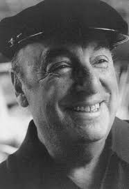

Vinte Poemas de Amor e uma Canção Desesperada
"La explosión del joven Neruda EDICIÓN BILINGÜE Publicado originalmente en 1924, Veinte poemas de amor y una canción desesperada es hasta el día de hoy uno de los títulos de poesía más vendidos en lengua española. Fue el segundo libro publicado por el joven Pablo Neruda (1904 -1973), tras Crepúsculo, y ya podemos ver aquí los principales temas que marcarían toda la obra literaria del autor: el asombro del ser humano ante la experiencia del amor, el elogio de la mujer amada y la celebración. de paisajes chilenos Como señaló Gabriela Mistral, Neruda significó “un hombre nuevo en América, una sensibilidad con la que abrió un nuevo capítulo emocional americano sobre esta obra: “Es un libro que me encanta porque, a pesar de su agudeza”. melancolía, el placer de vivir está presente en ella”. “Puedo escribir los versos más tristes esta noche. La deseaba y, a veces, ella también me deseaba”. Quería hacerlo. En noches como ésta, la tuve en mis brazos y la besé tantas veces bajo el cielo infinito”.